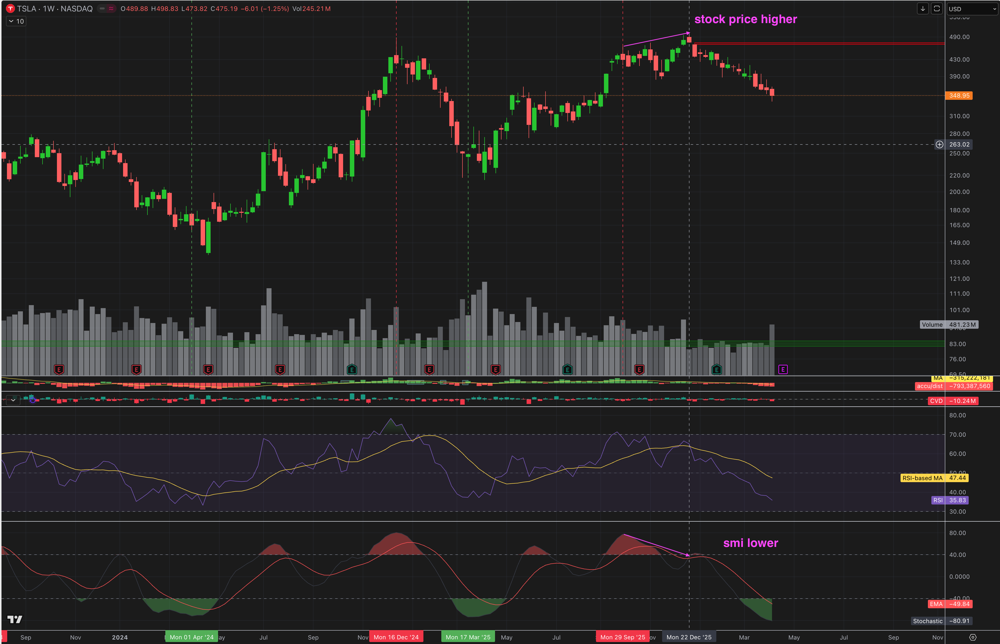

Gemini Answer
Question
请（1）解释是SMI （2）周五TSLA weekly SMI是大概-80 怎么算出来的
Answer
什么是 SMI (Stochastic Momentum Index，随机动量指标)？
SMI 是由 William Blau 提出的一种动量振荡指标，它是大家熟知的传统随机指标 (Stochastic Oscillator，即常见 KDJ 中的 KD) 的深度改进版。
核心区别与特点：
* 传统的 Stochastic：衡量的是当前收盘价与特定周期内最低价的相对距离，取值在 0 到 100 之间。
* SMI：衡量的是当前收盘价与特定周期内最高价与最低价的中点 (Midpoint) 的相对距离，并使用双重指数移动平均线 (EMA) 对波动进行平滑处理。
* 取值范围：SMI 的取值在 -100 到 +100 之间。
* 正值 (>0)：当前价格高于近期高低区间的中点，代表多头（Bullish）动能。
* 负值 (<0)：当前价格低于近期高低区间的中点，代表空头（Bearish）动能。
* 超买/超卖：按照你截图的设置，大于 +40 为超买，小于 -40 为极度超卖。
周五 TSLA Weekly SMI 约 -80 是怎么算出来的？
SMI 的核心在于计算当前收盘价与该周期中点（Midpoint）的距离。结合你提供的 TSLA 周线图，参数为 10, 3, 5，计算推演如下：
第一步：计算中点 (Midpoint)
首先，软件会寻找过去 10 周（K Length）内的最高价 ($HH_{10}$) 和最低价 ($LL_{10}$)。根据图表，最高价约在 $480，最低价在当前的 $337 左右。
$$ Midpoint = \frac{HH_{10} + LL_{10}}{2} = \frac{480 + 337}{2} = 408.5 $$
第二步：计算距离 (Distance, $D$)
计算当前收盘价 ($Close$) 偏离中点的程度。周五 TSLA 的收盘价为 348.96：
$$ D = Close - Midpoint = 348.96 - 408.5 = -59.54 $$
- 如果 $D > 0$，说明价格在中点之上（强势）。
- 如果 $D < 0$，说明价格在中点之下（弱势）。目前 TSLA 属于深度偏离中点之下的情况。
第三步：双重平滑处理
为了过滤噪音，SMI 对 $D$ 和 $HL$（高低极差）进行了两次指数移动平均（EMA）平滑（即根据你的参数，进行 3 周期和 5 周期的 EMA）：
- $D_{smoothed}$：对偏离程度 $D$ 进行双重 EMA 平滑。
- $HL_{smoothed}$：对过去 10 周的极差 ($HH_{10} - LL_{10}$) 同样进行双重 EMA 平滑。在此例中，原始极差 $HL = 480 - 337 = 143$。
第四步：最终公式与数值
$$ SMI = 100 \times \frac{D_{smoothed}}{0.5 \times HL_{smoothed}} $$
如果我们看未经过均线平滑前、最原始的数据带入，表现出的跌幅极限大约是：
$$ 原始 SMI = 100 \times \frac{-59.54}{0.5 \times 143} = 100 \times \frac{-59.54}{71.5} \approx -83.27 $$
这表示当前价格不仅低于中点，而且几乎碰到了整个 10 周波动区间的下限（绝对底端为 -100）。
最后，经过系统内置的 EMA 过滤最近几周加速下跌所产生的数值跳跃，平滑后的曲线最终锁定在图表显示的约 -79.69。
Follow-up Question - 什么是顶背离

what does it mean price made higher, but smi lower
Follow-up Answer - 什么是顶背离
这是一个非常经典且可靠的技术分析形态，在交易语言中被称为 “顶背离” (Bearish Divergence)。
以下是对这种现象的底层逻辑和含义的详细拆解：
核心含义：“动能衰竭” (Exhaustion)
当股票价格创出 更高的高点 (Higher High)，但与此同时，动量指标（如这里的 SMI，或 RSI、MACD）却走出了 更低的高点 (Lower High) 时，就构成了“顶背离”。
它在向交易者传递一个强烈的警告信号：“不要被表面创新高的价格骗了，多头力量已经快耗尽了。”
底层逻辑：价格 vs. 真实动能
- 看价格 (Stock Price Higher)： 表面上看，市场走势非常强劲，价格突破了前高，看起来像是一个势不可挡的上涨突破。
- 看指标 (SMI Lower)： SMI 衡量的是价格上涨的速度、力度和内在动能。SMI 的高点在降低，揭示了在这个第二次冲高破位的过程中，买盘的真实意愿、资金推力以及上涨的速度，都远远弱于第一次冲高时。
一个通俗的“爬坡”比喻
想象你正开着一辆车爬一座陡峭的雪山：
- 第一次冲锋： 你一脚油门踩到底，车速极快冲上了一个山头（对应：高价格峰值 + 高 SMI 峰值）。
- 途中休整： 山路往下回撤了一点点。
- 第二次冲锋： 你踩着油门继续往上冲，车子勉强开到了比刚才更高一点的海拔（对应：股价创新高）。但是，此时汽车的发动机已经过热，油也快没了，车速其实慢如蜗牛（对应：动量 SMI 没能创新高，反而走低）。
- 结果是： 虽然你现在站得比刚才高，但你的向上冲力已经彻底枯竭，车子随时可能熄火并向后溜车滑坡。
市场结果与预警
顶背离通常代表着趋势即将见顶反转、或者出现深度回调的早期预警。它往往意味着主力资金（Smart Money）正在借着“股价创新高”的利好假象，悄悄将筹码派发（卖出）给那些盲目追高入场的散户。
正如你在截图中所完美展示的那样：在那条垂直虚线处确认了“顶背离”之后，向上的趋势彻底死亡，TSLA 随后经历了一场惨烈的崩盘暴跌。可以说，SMI 指标在价格真正崩盘前，就已经提前扒开了这波上涨虚弱的底牌！
Follow-up Question 2 - 从SMI计算公式解释为什么会出现顶背离
请从smi计算公式的角度用例子解释为什么会出现顶背离
Follow-up Answer 2 - 从SMI计算公式解释为什么会出现顶背离
要从 SMI 计算公式的底层逻辑来理解“顶背离”，我们需要死死盯住公式里的两个核心设定：“中点（Midpoint）的移动” 和 “均线平滑（EMA）带来的时间与速度惩罚”。
让我们先把公式的灵魂提取出来：
- 离差 ($D$) = 当前收盘价 ($Close$) - 过去 10 周的中点 ($Midpoint$)
- SMI分子 = 对 $D$ 进行双重 EMA 平滑
- SMI指标本质 = 评估价格“持续性地、高速地”偏离中位线的力量。
下面我们通过一个极端且通俗的沙盘推演，来看看价格是怎么创新高，但公式计算结果却掉链子的。
📊 案例推演：从强劲暴涨到“强弩之末”
假设某股票的周期参数不变。
⛰️ 第一座山峰：主升浪（高点位 + 高 SMI）
主力发动猛烈快攻。在短短 3 天内，股票从 $100 直线暴拉到 $200。
- 计算情况：10周最高是 200，最低是 100。
Midpoint 中点 = (200 + 100) / 2 = 150- 由于拉升极猛，收盘价
$200站在高位，当天的 $D$（离差）为纯正的巨大正数：200 - 150 = +50。 - EMA 速度加成：因为是连续的大阳线快攻，前几天的 $D$ 值也全是极大的正数。在双重 EMA（指数移动平均）的叠加下，动量累积爆表。
- 结果：此时股价最高 $200，SMI 飙升到了史无前例的
+80。
📉 中场休息：高位横盘/洗盘
股票涨不动了，在接下来几周里，价格从 $200 慢慢回踩并在 $170 附近横盘整理。
- 公式变化：此时收盘价不仅不再远离中点，甚至会在中点附近疯狂摩擦。每天算出来的 $D$ 变成了零零碎碎的小正数或小负数。
- EMA 的冷却：经过这几周的“消磨”，双重 EMA 指标快速冷落，之前的火热惯性被清零，SMI 曲线掉到了
0轴甚至负数。此时多头动能如同生锈的齿轮。
⚠️ 第二座山峰：顶背离出现！(更高的价格 + 更低的 SMI)
主力决定做最后一波诱多出货，他们再次发力，股价慢慢悠悠地从 $170 爬升，终于不仅回到了 $200，更是突破新高，刺穿到了 $210。
这时候我们再算算这笔账：
1. 空间拉伸上的衰败（偏离中点受挫）
这段时间里，因为最低价可能随着时间窗口推移而上移（比如前期的最低点 $100 断点失效了，新区间的最低点变成了 $140）：
- 新区间：
$140到$210。 新的 Midpoint = (140 + 210) / 2 = 175。- 当天的确创出了新高
$210！但是，当天的离差$D = 210 - 175 = +35。 - 看懂了吗？ 第一次冲锋时，绝对偏离差值是
$50；这次虽然价格创了新高，但因为“后方大本营（中点）”也跟着上移了，价格领先中点拉扯的空间幅度实际上在缩水（从 50 掉到了 35）。
2. EMA 机制面临严重的“时间惩罚”（速度锐减）
更致命的问题在双重 EMA 这里。由于第二波拉升是从 $170 开始且耗时较长的“磨阴带阳”上涨：
- 在它涨到
$210的过程中，前几天的 $D$ 值并不是像第一波那样满血纯阳，而是夹杂了太多的小碎步甚至回调。 - 双重 EMA 注重的是短期的“爆发加速度”。因为过去几周横盘拖了后腿，加上这波拉升不够干脆、爆发力不足，平滑过后的 $D_{smoothed}$ 分子根本无法累积到第一波的那种恐怖当量。
💡 最终结论
公式毫不留情地吐出了它的计算结果：
- 价格（Price）：从上一波的
$200涨到了这一波的$210。【Higher High —— 创新高】 - SMI值：由于空间拉扯力度变弱、速度变慢（被 EMA 打折），这次的 SMI 只算出了
+40（远低于上一波的+80）。【Lower High —— 顶背离】
总结一句话：
从公式角度解释顶背离就是——虽然最后一天的价格绝对值（Close）勉强挤爆了前高，但是由于它上涨的过程太漫长、中途衰减太多，导致双重 EMA （均线系统）不买账了。系统认为：你虽然站得更高了，但你的推力、速度和甩开平均线的能量，已经严重透支。